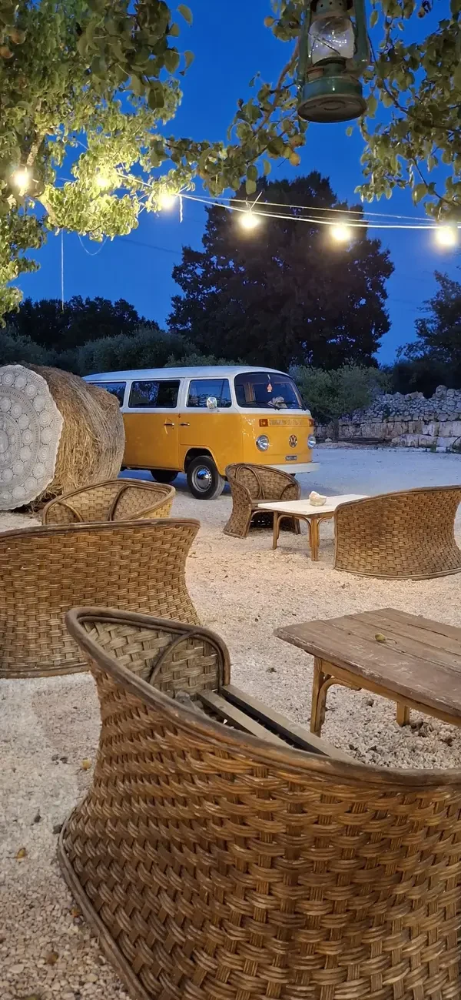
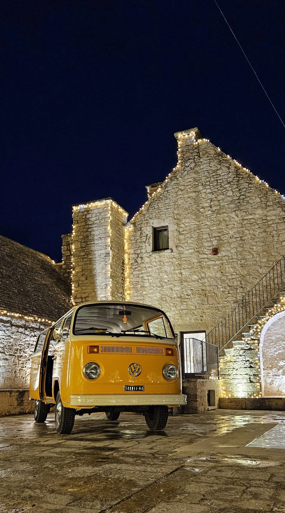

PRIVATE PARTIES · PHOTO SHOOTS · BRAND EVENTS
Bring inthe yellow one.
An entrance at a party. A place in the shot. A bright idea for your brand. Our 1974 Volkswagen bus comes with a chauffeur and a fair amount of character. Tell us the part you’d like it to play.
Tell us what you’re planningStart with the date, location and what you have in mind.
CAST THE VW IN YOUR PLANS
A party? A shoot?
Rather good at getting noticed.
Same bus, different brief. We’ll work out the timings, position and use of the VW around what you’re putting together.

01 / 03A guest
people will notice.
First communions, 18th birthdays and other milestone celebrations. Talk to us about arriving in the VW, arranging transfers or having it at your venue for the party.
ARRIVALS, TRANSFERS OR TIME AT YOUR VENUEPut a VW
in the frame.
Portraits, fashion, campaigns or a personal photo shoot. We’ll coordinate the location, timings and position of the bus with your photographer so it fits the shoot you have planned.
LOCATION, SHOOT TIME AND USE AGREED WITH YOURather good
at getting noticed.
A launch, a venue event or a brand installation. Tell us how the VW fits into your plans and we’ll discuss the position, duration and decoration suitable for the vehicle.
A QUOTE BASED ON YOUR BRIEFBEFORE THE CALL SHEET
A good idea.
A few practical details.
Give us a location, a date and an outline of how you’d like to use the VW. We’ll check access, timings, journeys and decoration.

Send the outline
A rough brief, reference pictures or a running order is a good start.
Work through the practicalities
We’ll look at the venue, timings and proposed use of the vehicle.
Get the details agreed
The route, duration, decoration and price are set out in your quote.
OVER TO YOUR IDEA
What’s the plan
for the yellow VW?
Tell us when, where and what you need the bus for. If you already have a brief or references, describe them in your message.
Talk directly with us.
Sounds like a plan.
Let’s talk.
Check the details, then open WhatsApp to send us your enquiry.
Open WhatsAppWe’ll reply with availability and a quote.
Your booking is confirmed separately.
BEFORE YOU CONFIRM
The practical bit.
Does the VW come with a chauffeur?
Yes. We agree any journeys and the time needed at your venue, including when the VW is used as part of a set.
Can we decorate or style the bus?
Send us your idea and reference pictures. Before confirming, we’ll check which materials, fixings and uses are suitable for a vintage vehicle. Agreed decoration and any extras are listed in the quote.
Is a photographer included?
The enquiry is for the VW; photography and production services aren’t automatically included. If you have a photographer or crew, we’ll coordinate with them. Tell us in the brief if you need anything else.
How is the price worked out?
It depends on the date, location, duration, journeys and proposed use. Once we’ve checked availability, we’ll send a quote and agree the service details in writing.
You’ve got the idea.
We’ve got the yellow VW.